「OCI Network Firewall」はパロアルトネットワークスの次世代ファイアウォール技術を基に構築されたOCIクラウドネイティブのマネージド・ファイアウォールとなっており、URLフィルタリングやTSL/SSL検査などの機能を提供します。
OCI Network Firewallの説明につきましてはOCIチュートリアル「OCI Network Firewallを構築する」を参照ください。
本チュートリアルではOCI Network Firewallがをハブアンドスポーク構成で構築します。
所要時間 :
- 約80分
(このうちNetwork Firewallインスタンスの作成に40分ほどかかります)
前提条件 :
- ユーザーに必要なIAMポリシーが割り当てられていること。ポリシーの詳細はドキュメントを参照ください。
注意 :
- ※チュートリアル内の画面ショットについてはOracle Cloud Infrastructureの現在のコンソール画面と異なっている場合があります。
はじめに
以下が本チュートリアルで作成するNetwork Firewallの構成図と設定です。
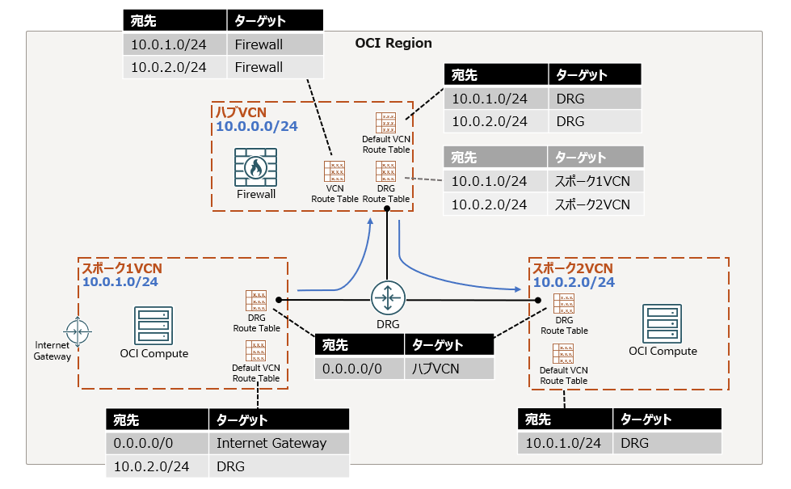
ルーティング設定が少々複雑ですので、設定についてまず確認したい方は「（補足）ルーティングについて」を先にご覧ください。
1. ネットワーク構築
1-1. VCNの作成
構成図に沿って、ハブのVCN１つとスポークのVCN２つの計３つのVCNを作成します。
OCIコンソール画面にアクセスし、左上の[メニューボタン] → [ネットワーキング] → [仮想クラウド・ネットワーク] と移動、「VCNの作成」を選択します。
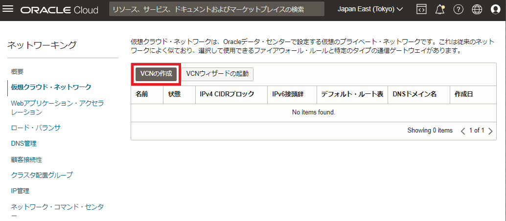 各VCNを以下のように設定します
- ハブVCN
名前：hub-vcn-tutorialコンパートメント：<VCNを作成するコンパートメントを選択>IPv4 CIDR blocks：10.0.0.0/24
- スポークVCN1
名前：spoke01-vcn-tutorialコンパートメント：<VCNを作成するコンパートメントを選択>IPv4 CIDR blocks：10.0.1.0/24
- スポークVCN2
名前：spoke02-vcn-tutorialコンパートメント：<VCNを作成するコンパートメントを選択/>IPv4 CIDR blocks：10.0.2.0/24
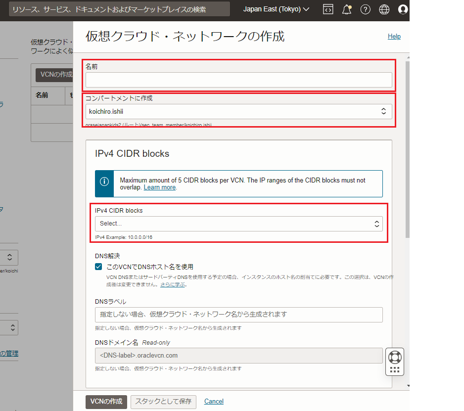
1-2. DRGの作成
作成したVCN間の通信を行うため、仮想ルーターである「動的ルーティング・ゲートウェイ（以下DRG）」を作成します。
DRGの詳細につきましては、ドキュメント「DRGの概要」を参照ください。
OCIコンソール左上より[メニューボタン] → [ネットワーキング] → [顧客接続性] → [動的ルーティング・ゲートウェイ]と移動し、「動的ルーティング・ゲートウェイの作成」を選択します。
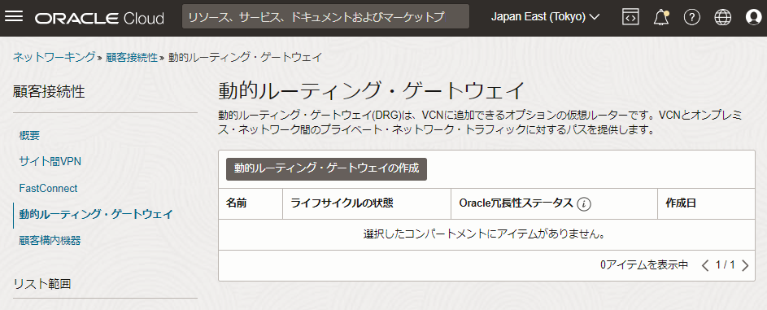
「動的ルーティング・ゲートウェイの作成」画面にて任意の名前を入力し、「動的ルーティング・ゲートウェイの作成」ボタンを選択します。
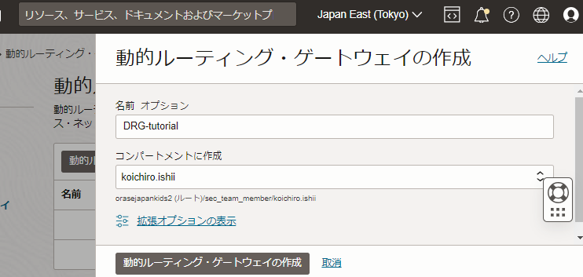
作成するとDRGの詳細画面に遷移し、しばらくするとステータスが「使用可能」になることを確認します。
1-3. DRGアタッチメントの作成
続いてVCN間の接続をするためのDRGアタッチメントを作成します。
DRG詳細画面の左リソース欄から[VCNアタッチメント]を選択し、[仮想クラウド・ネットワーク・アタッチメント作成]をクリックします。
「VCNアタッチメントの作成」画面にて任意の添付名を入力し、ハブとスポークの3つのVCNに対してそれぞれアタッチメントを作成します。 このチュートリアルでは以下のように添付名を設定しています。
- ハブVCN
添付名：hubvcn-DRG仮想クラウド・ネットワーク：hub-vcn-tutorial
- スポークVCN1
添付名：spoke01vcn-DRG仮想クラウド・ネットワーク：spoke01-vcn-tutorial
- スポークVCN2
添付名：spoke02vcn-DRG仮想クラウド・ネットワーク：spoke02-vcn-tutorial
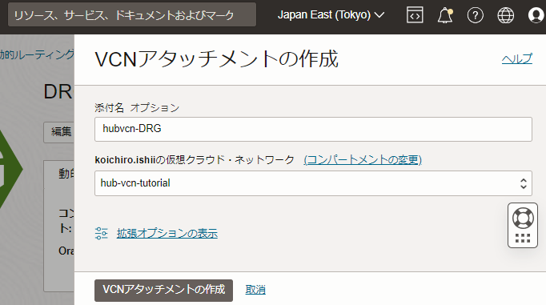
3つのVCNに対してVCNアタッチメントを作成し、いずれの状態も「アタッチ済」であることを確認します。
1-4. ハブVCNの設定
ハブVCN「hub-vcn-tutorial」に以下の手順でインターネット・ゲートウェイ、ルート表、セキュリティリストを作成します。
以下の設定はすべてハブVCNのみで行うことに注意してください。
・サブネットの作成
Firewallインスタンスを配置するためのサブネットを作成します。
ハブVCNの詳細画面の左下のリソースより[サブネット]を選択し、「サブネットの作成」ボタンをクリックします。
表示された「サブネットの作成」画面にて、以下項目を入力し「サブネットの作成」ボタンをクリックします。なお、本チュートリアルでは検証のため、サブネットアクセスをパブリックにしています。
名前：hub-subnet-NFWサブネット・タイプ：リージョナルIPv4 CIDR Block- 10.0.0.0/24ルート表- Default Route Table for <ハブVCN>サブネット・アクセス- パブリック・サブネットDHCPオプション- default DHCP Optionsを選択（Default DHCP OptionsはVCNの作成時に自動的に作成されます）セキュリティ・リスト- Default Security List for <ハブVCN>
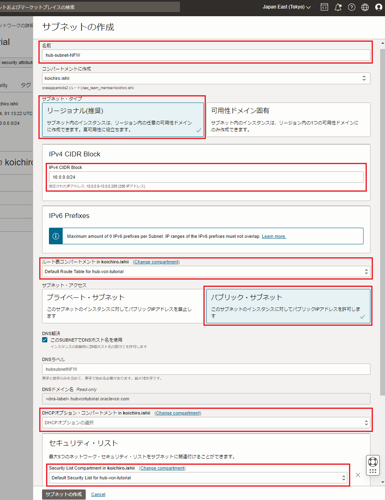
2. Network Firewallの作成
Network Firewallインスタンスの作成には40分程時間がかかるため、ここでNetwork Firewallインスタンスを作成します。
2-1. ネットワーク・ファイアウォール・ポリシーの作成
Network Firewallインスタンスを作成する際、ネットワーク・トラフィックを制御するルールをまとめたポリシー「ネットワーク・ファイアウォール・ポリシー」を指定する必要があるため、インスタンス作成前に用意します。
OCIコンソール画面左上のメニューボタン → [アイデンティティとセキュリティ] → [ファイアウォール] → [ネットワーク・ファイアウォール・ポリシー]と選択し、「ネットワーク・ファイアウォール・ポリシーの作成」をクリックします。
ポリシーの作成画面にて任意のポリシー名を入力し、「ポリシーの作成」ボタンをクリックします。
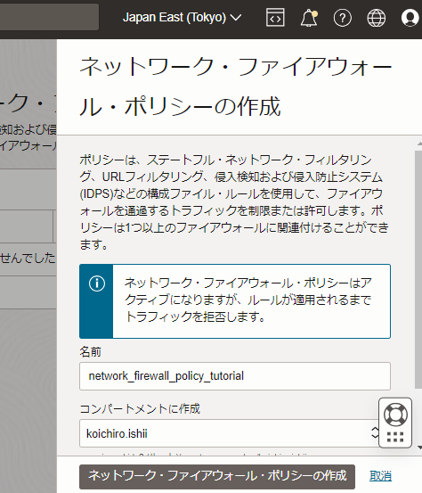
なお、ファイアウォール・ポリシーはNetwork Firewallインスタンスに関連づけられると編集・削除ができなくなります。編集または削除のためには、ポリシーをクローニングなどで新しく作成し、インスタンスに再度アタッチする形で変更することになります。そのため、ここでファイアウォール・ポリシーでの設定が決まっている場合は、ルールの編集を行っておくと手間が少なくなります。
2-2. Network Firewallインスタンスの作成
続いてNetwork Firewallインスタンスを作成します。
OCIコンソール画面左上のメニューボタン → [アイデンティティとセキュリティ] → [ファイアウォール]と選択し、「ネットワーク・ファイアウォールの作成」をクリックします。
表示された「ネットワーク・ファイアウォールの作成」画面にて以下項目を入力し、「ネットワーク・ファイアウォールの作成」ボタンをクリックします。
名前：NFW-turorialネットワーク・ファイアウォール・ポリシー：<先ほど作成したネットワーク・ファイアウォール・ポリシーを選択>仮想クラウド・ネットワーク：ハブVCN（hub-vcn-tutorial）サブネット：ハブVCN内に作成したサブネット（hub-subnet-NFW）
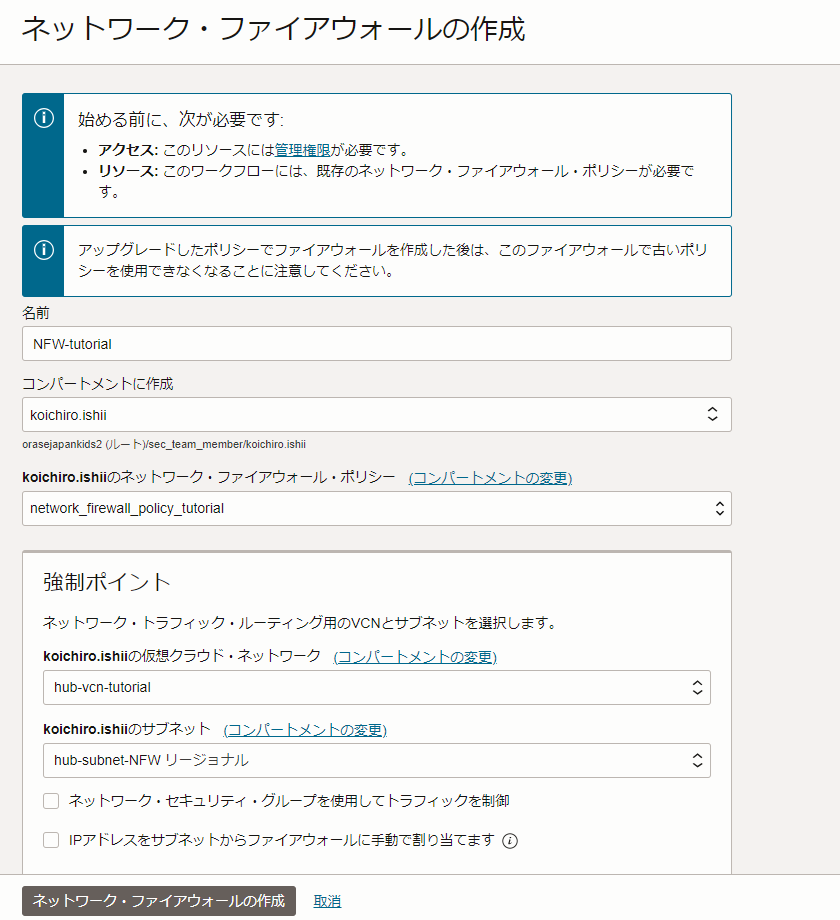
作成中にNetwork Firewallインスタンスの詳細画面にIPv4アドレスが表示されますので、この後の手順にて行うネットワークの設定のため、表示されたIPv4アドレスをメモに控えておきます。 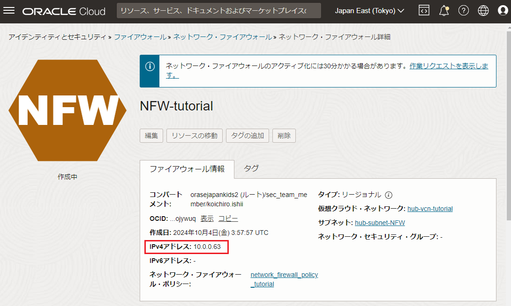
3. VCNのルーティング設定
3-1. スポークVCNの設定
・サブネットの作成
スポークVCNにインスタンスを配置するためのサブネットを作成します。
なお、本チュートリアルではこの後に行う疎通検証のため、サブネット・アクセスを「パブリック」に設定しています。
各スポークVCNの詳細画面の左下のリソースより[サブネット]を選択し、「サブネットの作成」ボタンをクリックします。
表示された「サブネットの作成」画面にて必要項目を入力し「サブネットの作成」ボタンをクリックします。
各スポークVCNでそれぞれ以下の項目を入力しサブネットをそれぞれ２つ作成します。
- スポークVCN01のサブネット
名前：spoke01-subnetサブネット・タイプ：リージョナルIPv4 CIDR Block- 10.0.1.0/24ルート表- Default Route Table for <スポークVCN01>サブネット・アクセス- パブリック・サブネットDHCPオプション- Default DHCP Options（Default DHCP OptionsはVCN作成時に自動的に作成されます）セキュリティ・リスト- Default Security List for <スポークVCN01>
- スポークVCN02のサブネット
名前：spoke02-subnetサブネット・タイプ：リージョナルIPv4 CIDR Block- 10.0.2.0/24ルート表- Default Route Table for <スポークVCN02>サブネット・アクセス- パブリック・サブネットDHCPオプション- Default DHCP Options（Default DHCP OptionsはVCN作成時に自動的に作成されます）セキュリティ・リスト- Default Security List for <スポークVCN02>
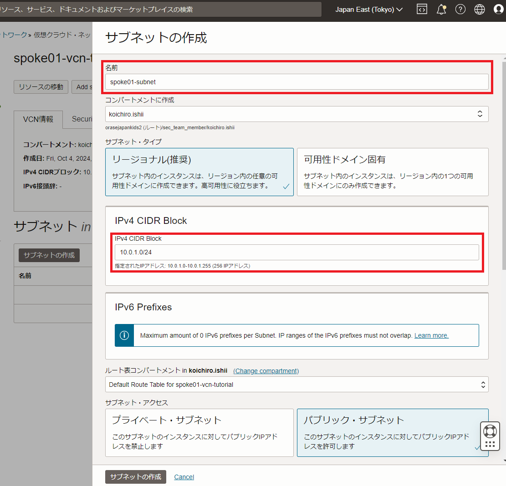
・ルート表の設定
スポークVCNからのアウトバウンド通信ががDRGを通過してハブVCNへ向かうようにルート表を設定します。
スポークVCN01「spoke01-vcn-tutorial」詳細画面の左のリソース欄から「ルート表」を選択し、「Default Route Table for spoke01-vcn-tutorial」をクリックします。 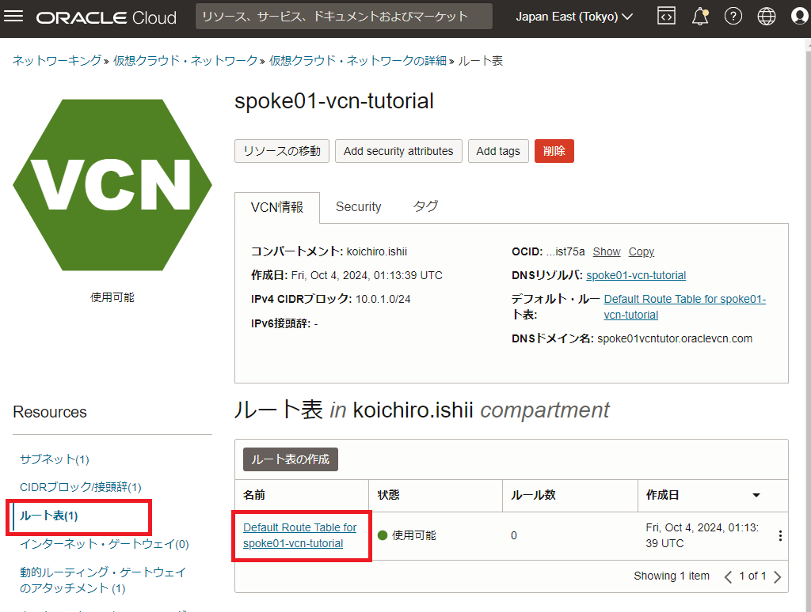
「ルート・ルールの追加」を選択し、追加画面にて以下の項目を設定を行い「ルート・ルールの追加」をクリックします。
ターゲット・タイプ：動的ルーティング・ゲートウェイ宛先タイプ：CIDRブロック宛先CIDRブロック：10.0.2.0/24
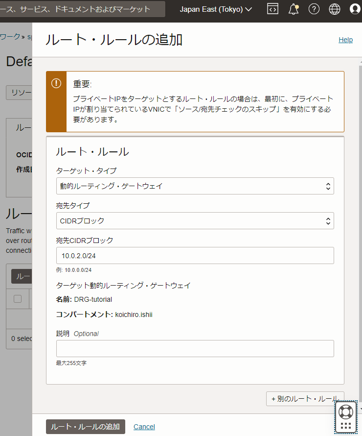
スポークVCN02「spoke02-vcn-tutorial」のDefaultルート表でも同様に、以下の項目でルート・ルールを作成します。
ターゲット・タイプ：動的ルーティング・ゲートウェイ宛先タイプ：CIDRブロック宛先CIDRブロック：10.0.1.0/24
3-2. ハブVCNの設定
・ルート表の作成
スポークと同様に、ハブVCNからのアウトバウンド通信がDRGを通過してスポークVCNへ向かうようにルート表を設定します。
スポークVCN01「hub-vcn-tutorial」詳細画面の左のリソース欄から「ルート表」を選択し、「Default Route Table for hub-vcn-tutorial」をクリックし、以下のルールを追加します。
「＋別のルート・ルール」をクリックすると、ルールを追加することができます。
- ルート・ルール１
ターゲット・タイプ：動的ルーティング・ゲートウェイ宛先タイプ：CIDRブロック宛先CIDRブロック：10.0.1.0/24
- ルート・ルール2
ターゲット・タイプ：動的ルーティング・ゲートウェイ宛先タイプ：CIDRブロック宛先CIDRブロック：10.0.2.0/24
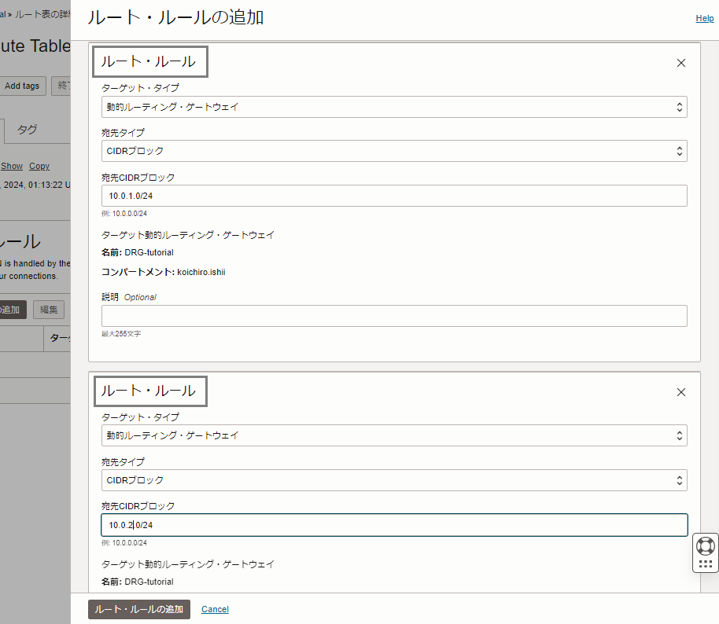
3-3. DRGルート表の設定
ハブDRGがスポークDRGからルートを配布してもらえるよう設定を行います。
OCIコンソール左上より[メニューボタン] → [ネットワーキング] → [顧客接続性] → [動的ルーティング・ゲートウェイ]と移動し、作成したDRGを選択、詳細画面に移ります。
詳細画面の左のリソース欄の「ルート・ディストリビューションのインポート」を選択し、「ルート・ディストリビューションのインポートの作成」をクリックし、以下の設定で作成します。
「＋別の文」をクリックすることで追加の文を作成することができます。
-
名前：Route Distribution for hub-vcn-tutorial 優先度：10一致タイプ：アタッチメント・タイプ・フィルタ：仮想クラウド・ネットワーク-
DRGアタッチメント：spoke01vcn-DRG（スポーク1VCNのDRGアタッチメント） 優先度：20一致タイプ：アタッチメント・タイプ・フィルタ：仮想クラウド・ネットワークDRGアタッチメント：spoke02vcn-DRG（スポーク2VCNのDRGアタッチメント）
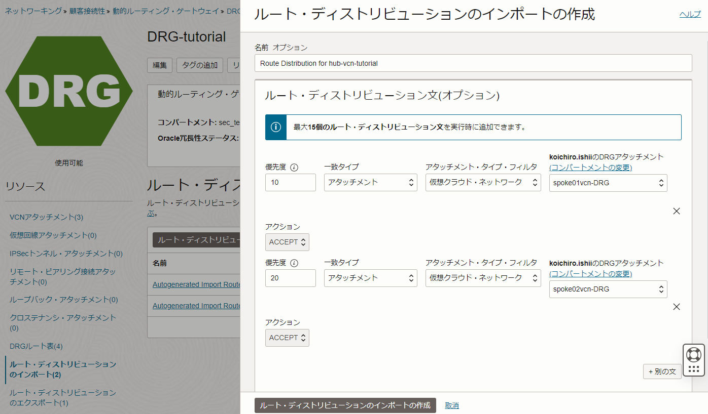
次にDRGルート表を作成します。
まずはハブVCNから出た通信がスポークVCNに向かうように、以下の設定でDRGルート表を作成します。
詳細画面の左のリソース欄の「DRGルート表」を選択し、「DRGルート表の作成」をクリックします。
DRGルート表の作成画面にて任意の名前を付けた後、「拡張オプションの表示」をクリックし先ほど作成したルート・ディストリビューションのインポート「Route Distribution for hub-vcn-tutorial」を選択し作成します。
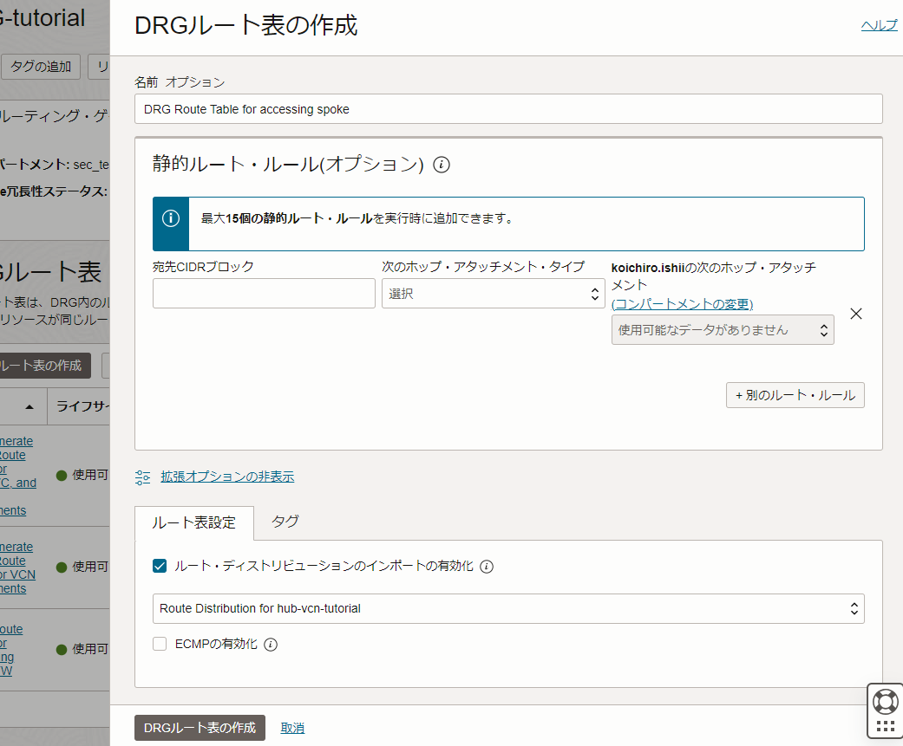
（＊作成したルート・ディストリビューションを有効化せずに、「静的ルート・ルール」にスポークVCNへの通信を手動で設定することも可能です。）
つづいて、スポークVCNから出る通信がハブVCNに向かうように、以下の設定でDRGルート表を作成します。
名前：DRG Route Table for accessing hub-NFW宛先CIDRブロック：0.0.0.0/0次のホップ・アタッチメント・タイプ：仮想クラウド・ネットワーク次のホップ・アタッチメント：hubvcn-DRG（ハブVCNのDRGアタッチメント）
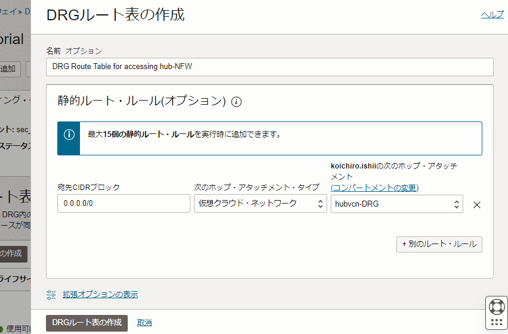
3-4. VCNアタッチメントにDRGルート表をアタッチする
先ほどの手順にて作成したDRGルート表を各VCNアタッチメントにアタッチします。
OCIコンソール左上より、[メニューボタン] → [ネットワーキング] → [顧客接続性] → [動的ルーティング・ゲートウェイ]と移動し、左のリソース欄から「VCNアタッチメント」を選択。手順1-3にて作成したDRGアタッチメントにルート表をアタッチします。
各アタッチメントに適用するルート表は以下のようになります。
hubvcn-DRG
├— [DRG Route Table for accessing spoke] DRGルート表
└— [Route Table for accessing NFW] VCNルート表spoke01vcn-DRG
└— [DRG Route Table for accessing hub-NFW] DRGルート表spoke02vcn-DRG
└— [DRG Route Table for accessing hub-NFW] DRGルート表
アタッチするには各添付名をクリックし、以下画像のようなアタッチメント詳細画面に移ります。そして詳細画面の「編集」を選択し、「拡張オプションの表示」をクリックして展開すると、[DRGルート表の選択]よりルート表をアタッチすることができます。
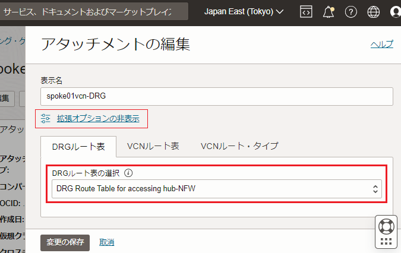
ハブVCNのアタッチメント「hubvcn-DRG」は以下画像のようにVCNルート表「Route Table for accessing NFW」もアタッチすることに注意して下さい。
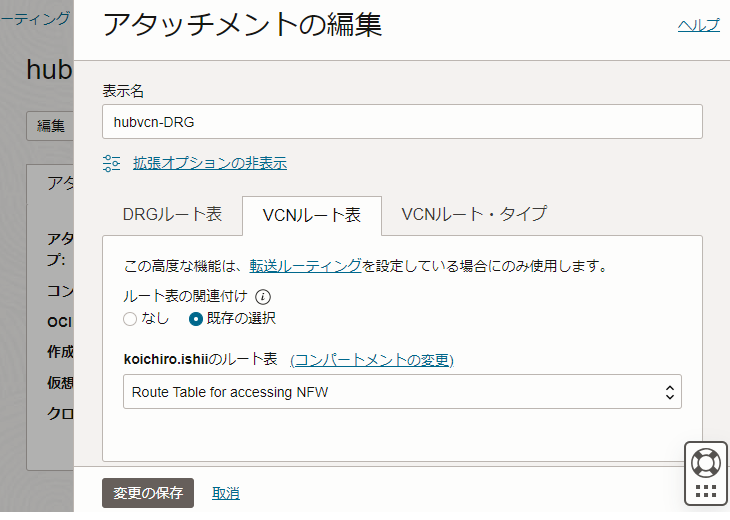
すべてのアタッチメントにルート表を設定し終えると以下のようになります。
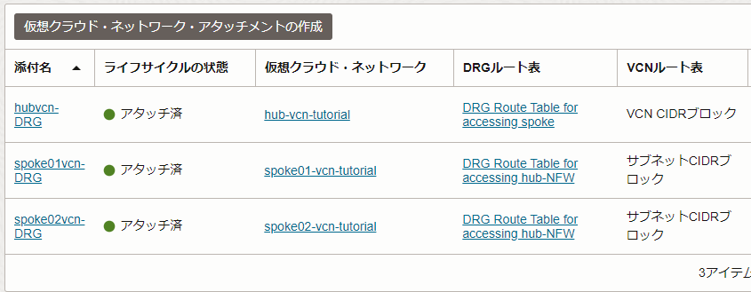
以上でハブアンドスポーク構成のルーティング設定は完了です。通信を実際に行うためにはファイアウォール・ポリシーやセキュリティリストの設定をする必要がありますので、通信したいプロトコル等に応じて通信の穴あけを行ってください。
次からの手順では、スポーク1からスポーク2へSSH接続ができるよう設定および確認を行い、以上のルーティングで設定した疎通が正しくできているかを確認します。
4. 疎通を確認するための追加設定
疎通を確認するため、各スポークサブネットにLinuxインスタンスを作成し、ファイアウォールを経由した接続ができているか確認を行います。方法としては、スポークに配置したインスタンスから他方のスポークに対してSSH接続ができるかを確認します。
手順3まではファイアウォールポリシーやセキュリティリストの設定を行っていませんでしたので、ほとんどの通信が許可されていません。そこでこの手順4では、はじめにポート22番が許可されるように設定を行い、次にインターネットからアクセスできるようインターネット・ゲートウェイを作成、そしてインスタンスを作成します。
その後、手順5にて疎通を確認する流れで進めていきます。
なお、各サブネットのセキュリティ・リストでは、ポート22番宛のインバウンドおよびアウトバウンド通信はデフォルトで許可ルールが設定されており、SSH接続に関しては設定を行う必要はないため、本手順からは設定手順を省いています。
Default Security Listではなく、新規に作成したセキュリティリストを使用している場合は注意してください。
4-1. ネットワーク・ファイアウォール・ポリシー設定
ネットワーク・ファイアウォールに関連づけられているファイアウォール・ポリシーは直接編集ができないため、クローニングしたポリシーを編集しファイアウォールインスタンスにアタッチし直すことで変更します。 ここでは手順2-1で作成したポリシー「network_firewall_policy_tutorial」をクローニングして、新しく設定を行います。
ネットワーク・ファイアウォール・ポリシー詳細画面の「ポリシーのクローニング」を選択し、名前を任意のものに設定。「ネットワーク・ファイアウォール・ポリシーの作成」を選択します。 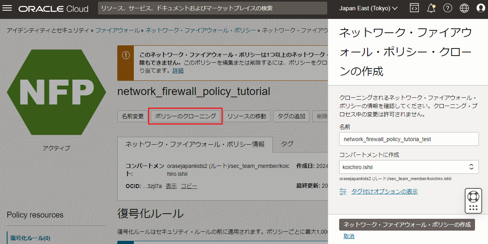
[アイデンティティとセキュリティ] → [ファイアウォール] → [ネットワーク・ファイアウォール・ポリシー]と移動するとクローニングされたポリシーが作成され、状態が「アクティブ」になることを確認します。
クローニングしたポリシーを選択し、詳細画面に移ります。
作成したサービス・リストの通信が許可・検知されるよう、セキュリティ・ルールを作成します。
詳細画面の左のポリシーリソースから「セキュリティ・ルール」を選択、「セキュリティ・リストの作成」をクリックし、以下の項目を入力。その後、「セキュリティ・ルールの作成」をクリックします。
名前：allow-all一致条件:ソース・アドレス：任意のアドレス宛先アドレス：任意のアドレスアプリケーション：任意のアプリケーションサービス：任意のサービスURL：任意のURL
ルール・アクション：トラフィックの許可
これでFirewallではすべての通信が許可される設定になりました。
最後にこのポリシーをNetwork Firewallインスタンスにアタッチします。 [アイデンティティとセキュリティ] → [ファイアウォール] → [ネットワーク・ファイアウォール]からファイアウォールインスタンスを選択、詳細画面の「編集」をクリックし、ネットワーク・ファイアウォール・ポリシーを先ほど作成した新しいポリシーに変更します。
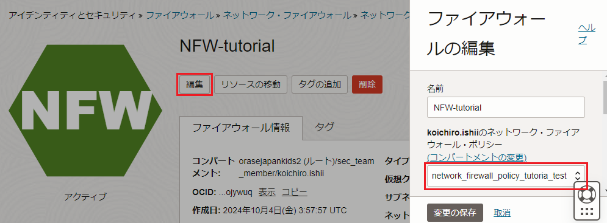
数分後、状態が「更新中」から「アクティブ」になったことを確認します。
4-2. インターネット・ゲートウェイの作成
インスタンスにインターネットから接続できるよう、インターネット・ゲートウェイを作成し、ルート設定を行います。ここではスポーク1VCNにインターネット・ゲートウェイを作成します。
スポークVCN1「spoke01-vcn-tutorial」詳細画面の左のリソース欄から「インターネット・ゲートウェイ」を選択し、「インターネット・ゲートウェイの作成」をクリックします。 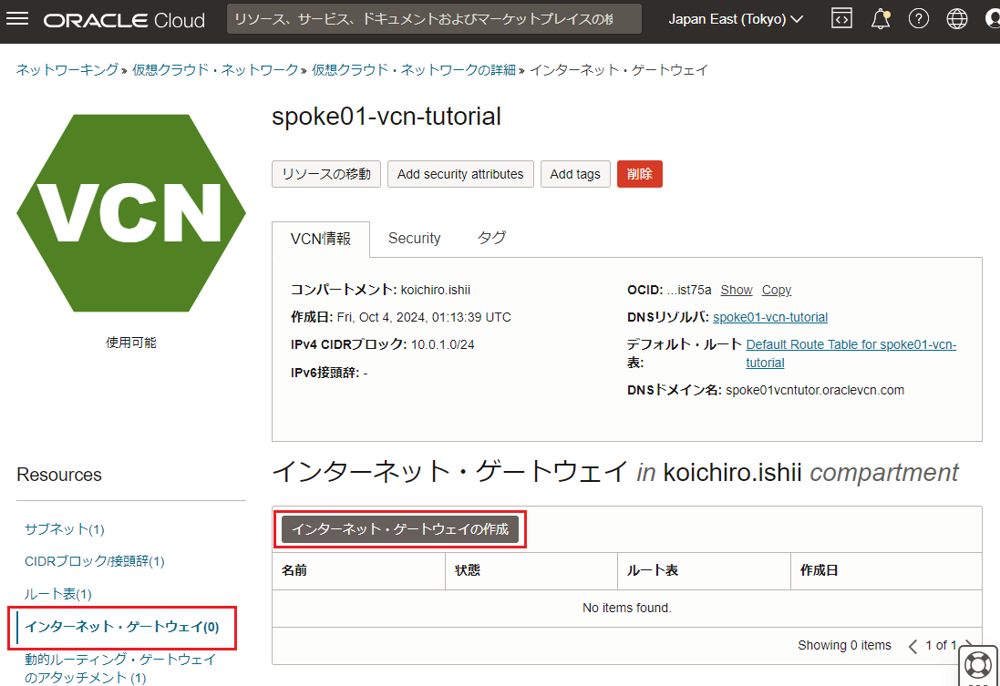
「インターネット・ゲートウェイの作成」画面にて任意のインターネット・ゲートウェイの名前を入力し、「インターネット・ゲートウェイの作成」ボタンを選択します。 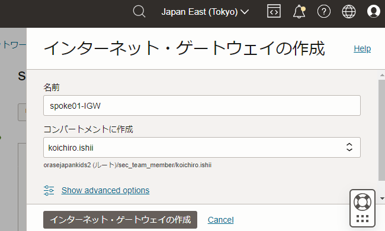
4-3. ルート表の設定
インターネットからのアクセスをインターネット・ゲートウェイで受け付けられるよう、ルート表の設定を行います。 スポークVCN1「spoke01-vcn-tutorial」詳細画面の左のリソース欄から「ルート表」を選択、「Default Route Table for spoke01-vcn-tutorial」をクリックし、「ルート・ルールの追加」を選択、以下の設定で作成します。
ターゲット・タイプ：インターネット・ゲートウェイ宛先CIDRブロック：0.0.0.0/0ターゲット・インターネット・ゲートウェイ：<作成したインターネット・ゲートウェイを選択>
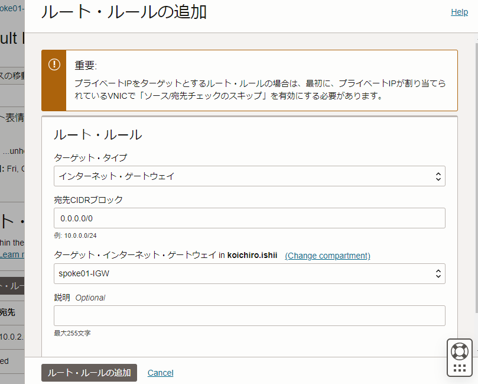
4-4. インスタンス作成
OCIコンソール画面左上の[メニューボタン] → [コンピュート] → [インスタンス] → [インスタンスの作成]をクリックし、「コンピュート・インスタンスの作成」画面にて、スポークVCN1とスポークVCN2に配置するインスタンスをそれぞれ作成します。
検証のため、入力項目は配置するサブネット以外は任意ですが、ここでは以下例のように入力しています。
スポークVCN1に配置するインスタンス
名前：任意（例：instance-spoke1）配置（可用性ドメイン）：任意（例：AD１）イメージ：任意（例：Oracle Linux 8）シェイプ：任意（例：VM.Standard.E5.Flex）ネットワーキング（仮想クラウド・ネットワーク）：spoke01-vcn-tutorialネットワーキング（サブネット）：spoke01-subnetパブリックIPアドレス：パブリックIPv4アドレスの割当てSSHキーの追加：「キー・ペアを自動で生成」を選択し、秘密キーと公開キーをそれぞれ保存。（手元に既存のSSHキーがある場合は、「公開キー・ファイルのアップロード」または「公開キーの貼りつけ」を選択し、公開キーを登録してください。）
スポークVCN2に配置するインスタンス
名前：任意（例：instance-spoke2）配置（可用性ドメイン）：任意（例：AD１）イメージ：任意（例：Oracle Linux 8）シェイプ：任意（例：VM.Standard.E5.Flex）ネットワーキング（仮想クラウド・ネットワーク）：spoke02-vcn-tutorialネットワーキング（サブネット）：spoke02-subnetパブリックIPアドレス：パブリックIPv4アドレスの割当てSSHキーの追加：「キー・ペアを自動で生成」を選択し、秘密キーと公開キーをそれぞれ保存。（手元に既存のSSHキーがある場合は、「公開キー・ファイルのアップロード」または「公開キーの貼りつけ」を選択し、公開キーを登録してください。）
5. 疎通を確認する
スポーク1VCNからスポーク2VCNへSSH接続を行い、Network Firewallインスタンスを経由してアクセスできるかの確認を行います。
スポーク1VCNに作成したインスタンス「instance-spoke1」へSSHで接続を行い、以下のコマンドでスポーク2VCNに作成したインスタンス「instance-spoke2」に対してSSH接続を行います。 以下の例では、このコマンドの実行前に「instance-spoke2」の秘密鍵を「instance-spoke1」へ転送していることを前提としています。
ssh -i <秘密鍵のパス> opc@<instance-spoke2のプライベートIPアドレス>
以下のように「instance-spoke2」へ接続できると成功です。
# 例）
[opc@instance-spoke1 ~]$ ssh -i .ssh/ssh-key-2024-10-04.key opc@10.0.2.114
Activate the web console with: systemctl enable --now cockpit.socket
[opc@instance-spoke2 ~]$
Network Firewallインスタンスの詳細画面よりtrafficログを有効化すると、ログを見ることができます。 ログの例としては以下のようになっており、SSH接続がFirewallを通過していることを確認できます。 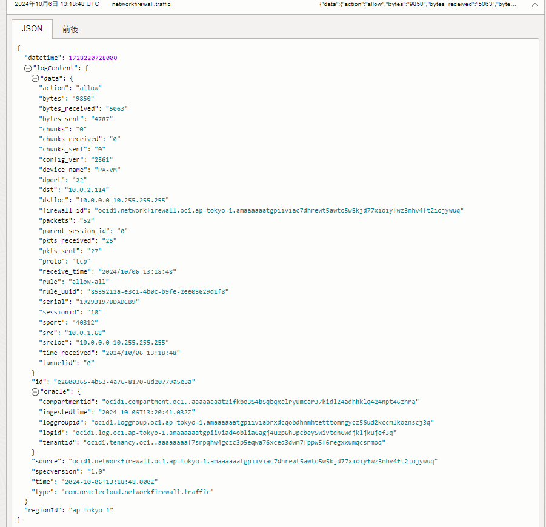
（補足）ルーティングについて
本チュートリアルで作成した構成はルーティングが少し複雑なため、ルーティング設定について補足します。
DRGの詳細を知りたい方は、こちらの資料をご参照ください。
まず、使用したルート表としては以下の3つです
- VCNに適用したDefault VCNルート表
- DRGルート表
- DRGアタッチメントに適用したVCNルート表
これらのルート表のルールが適用される状況をそれぞれみていきます。
・VCN（サブネット）に適用するVCNルート表
VCNルート表には「ローカルVCNルート」というものがデフォルトで含まれています。 そのため、同一VCN内のルーティングに対してのルーティングは自動的に処理されますので、同じVCN内のリソースに対するアクセスに関しては基本的にルーティングを設定する必要はありません。
また、このローカルVCNルートと同じ範囲（CIDR）で別の静的ルートを設定することも可能で、その場合は静的ルートが優先され、トラフィックがそちらを通るようになります。VCNルート表でルーティングルールが重複する場合、ロンゲストマッチに基づいてルールが優先されます。
例えば、こちらのNetwork Firewallのチュートリアル（以下構成図参考）のように、Firewallを通過させたい場合はFirewallのIPアドレスを通過するように明示的にルート・ルールを指定する必要があります。

したがって、VCN（サブネット）にアタッチされるVCNルート表は、VCN内のリソースがアウトバウンド通信を行う際に参照されるルールと考えることができます。
・DRGルート表
DRGルート表は通信がDRGアタッチメントに侵入する際、どのDRGアタッチメントに通信を転送するかを表します。
つまり、DRGへのインバウンド通信に参照されるルールとみなすことができます。
・DRGアタッチメントに適用するVCNルート表
DRGアタッチメントに対して適用したVCNルート表は、DRGアタッチメントからVCNに入った通信に対して適用されます。
そのため、DRGからVCNへの通信に対して参照されるルールとなります。
通信経路まとめ
よって本チュートリアルで作成した通信の経路を追ってみると、以下のようになります。
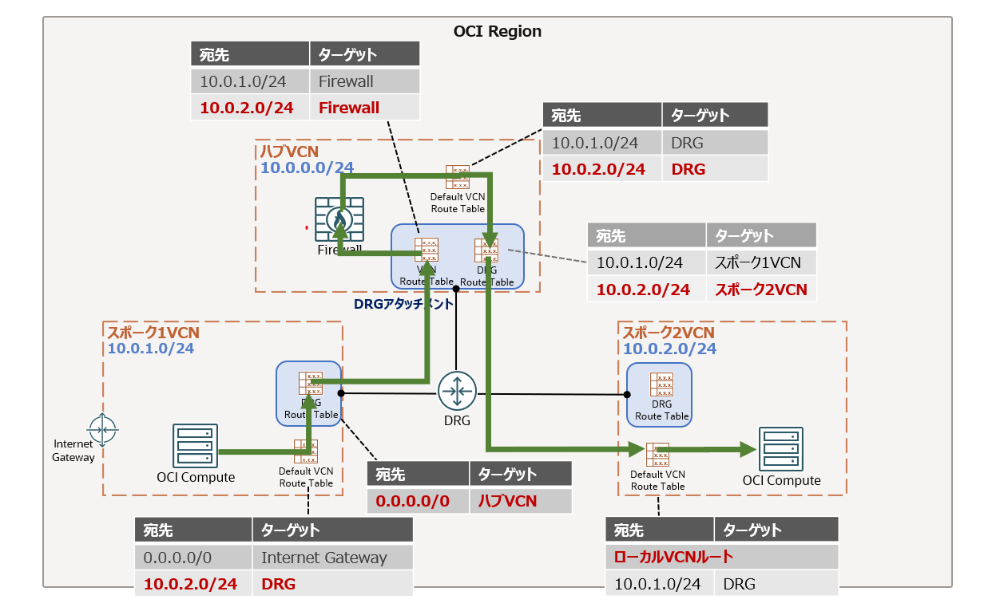